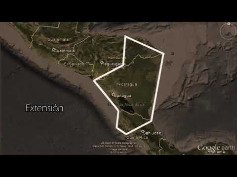

Explorando la belleza y diversidad de la región
Nicaragua, oficialmente llamado República de Nicaragua, es un país ubicado en América Central. Su capital y ciudad más poblada es Managua, aunque anteriormente era León. Está compuesta por quince departamentos y dos regiones autónomas: Costa Caribe Norte y Costa Caribe Sur. Se ubica en el hemisferio norte, entre la línea ecuatorial y el trópico de Cáncer, aproximadamente entre los 11° y los 15° de latitud Norte y respecto al meridiano de Greenwich, entre los 83° y los 88° de longitud Oeste. El territorio de Nicaragua tiene una superficie aproximada de 130 374 km², constituyéndose con ello como el país más extenso de América Central. Nicaragua cuenta con una población de 6 624 554 habitantes (2020). Limita al norte con Honduras, al sur con Costa Rica, al oeste con el océano Pacífico y al este con el mar Caribe. En cuanto a límites marítimos, en el océano Pacífico colinda con El Salvador, Honduras y Costa Rica; mientras que en el mar Caribe colinda con Honduras, Colombia y Costa Rica. Son reconocidas las lenguas de los pueblos indígenas originarios como el inglés criollo nicaragüense, misquito, sumu o sumo, garífuna y rama .
La historia de Nicaragua abarca desde la llegada de Cristóbal Colón hasta la actualidad. Aquí hay un
resumen de los principales acontecimientos históricos de Nicaragua:
1. Descubrimiento y colonización:
• En 1502, Cristóbal Colón descubrió la costa caribeña de Nicaragua durante su cuarto viaje.
• En 1522, Gil González Dávila y Andrés Niño llegaron a Nicaragua desde Panamá, iniciando la
conquista y colonización del territorio.
• En 1524, se fundaron las ciudades coloniales de León y Granada.
2. Dominación española:
• En 1527, Pedrarias Dávila gobernó Nicaragua y se caracterizó por su crueldad contra los
indígenas.
• En 1544, Nicaragua se incorporó a la Capitanía General de Guatemala.
• Durante esta época, el país experimentó paz y prosperidad relativas, aunque sufrió ataques de
piratas ingleses como Francis Drake.
3. Independencia y formación de la república:
• En septiembre de 1821, Nicaragua obtuvo su independencia de España.
• Posteriormente, Nicaragua se anexó al Imperio mexicano y luego formó parte de la Federación de
Estados Centroamericanos.
• El 30 de abril de 1838, Nicaragua se convirtió en una república independiente.
4. Conflictos y luchas políticas:
• Durante la primera mitad del siglo XIX, Nicaragua experimentó conflictos civiles y luchas de
poder.
• En 1907, el país se vio involucrado en una guerra impuesta por Honduras y El Salvador.
Estos son solo algunos aspectos destacados de la historia de Nicaragua. Hay muchos más eventos y
períodos importantes que han moldeado el país a lo largo de los años.
Los símbolos patrios de Nicaragua son los siguientes:
1. Bandera Nacional: La bandera de Nicaragua está formada por tres franjas horizontales de idéntica
anchura, dos de color azul en los márgenes (que significa justicia) y una blanca en el centro (pureza e
integridad), colores heredados del antiguo emblema de la Federación Centroamericana. Sobre la franja
blanca, centrado, figura el Escudo Nacional.
2. Himno Nacional: El himno de Nicaragua es el más corto de América y el único que no se inspira en
la «Marsellesa» ni proclama la guerra. Su música es de origen religioso, atribuida a un fraile: Anselmo
o Ernesto Castinove; su letra, original de Salomón Ibarra Mayorga (1887-1885). Fue cantado por primera
vez el 16 de diciembre de 1918, pero se adoptó oficialmente en 1938.
3. Escudo Nacional: El Escudo Nacional fue creado por decreto legislativo del 5 de septiembre de
1908. Está formado por un triángulo equilátero que encierra la figura de cinco volcanes continuos que
emergen entre dos mares (representando las cinco repúblicas centroamericanas), un arco iris (como
símbolo de la paz), un gorro frigio (símbolo de libertad) y la leyenda "República de Nicaragua - América
Central".
4. Pájaro Nacional: El Guardabarranco es el ave nacional de Nicaragua. Es un ave pequeña y colorida
que se encuentra en toda América Central.
5. Árbol Nacional: El Madroño es el árbol nacional de Nicaragua. Es un árbol de hoja perenne que
produce frutos comestibles.
6. Flor Nacional: La flor de Sacuanjoche es la flor nacional de Nicaragua. Es una flor blanca y
amarilla que crece en los árboles de Sacuanjoche..
En resumen, los símbolos patrios de Nicaragua son la bandera, el himno, el escudo, el pájaro, el
árbol y la flor nacionales.
Nicaragua es el país más grande de América Central en términos de extensión territorial. Según varias fuentes, la extensión territorial de Nicaragua es de 130,373.47 km². El país limita al norte con Honduras, al sur con Costa Rica, al este con el Mar Caribe y al oeste con el Océano Pacífico. Nicaragua se divide en 15 departamentos, 2 regiones autónomas y 153 municipios. La capital de Nicaragua es Managua, pero también destacan varias ciudades importantes como León, Granada, Masaya, Rivas y Estelí.
Nicaragua es un país lleno de lugares turísticos que ofrecen una gran variedad de actividades y
experiencias para los visitantes. A continuación, se presentan algunos de los lugares turísticos más
populares de Nicaragua, según los resultados de la búsqueda:
1. Granada: Una ciudad colonial con hermosas arquitecturas coloniales y neoclásicas, la mayoría hoy
restauradas y transformadas en restaurantes y hoteles. También se pueden visitar la Catedral de Granada,
el Parque Central y el Mercado Municipal.
2. Isla de Ometepe: Una isla en el Lago de Nicaragua que cuenta con dos volcanes, playas, cascadas
y senderos para caminar. También hay una gran cantidad de vida silvestre, incluyendo monos aulladores y
aves exóticas.
3. Reserva Natural Volcán Mombacho: Un volcán inactivo que cuenta con una reserva natural que
ofrece senderos para caminar, vistas panorámicas y una gran cantidad de vida silvestre.
4. Laguna de Apoyo: Una laguna de agua dulce en un cráter volcánico que ofrece natación, kayak y
senderismo. También hay una gran cantidad de vida silvestre, incluyendo monos aulladores y aves
exóticas.
5. San Juan del Sur: Un pueblo costero en la costa del Pacífico que ofrece playas, surf, pesca y
vida nocturna.
6. León: Una ciudad colonial con hermosas arquitecturas coloniales y neoclásicas, la mayoría hoy
restauradas y transformadas en restaurantes y hoteles. También se pueden visitar la Catedral de León, el
Museo de Arte Fundación Ortiz-Gurdián y el Mercado Central.
7. Isletas de Granada: Un archipiélago de más de 365 islotes ubicados en el Lago de Nicaragua. Las
isletas se formaron por una avalancha de lodo y piedras que se desprendió en las laderas del volcán
Mombacho. La mayoría de las isletas posee abundante vegetación y especies de aves.
8. Archipiélago de Solentiname: Un archipiélago de islas en el Lago de Nicaragua que cuenta con una
gran cantidad de vida silvestre, incluyendo monos aulladores y aves exóticas. También se pueden visitar
las comunidades locales y aprender sobre la cultura y la artesanía local.
9. Cañón de Somoto: Un cañón formado por el río Coco que ofrece senderismo, natación y vistas
panorámicas.
10. Estero Padre Ramos: Una reserva protegida de manglares en la ciudad de El Viejo, Chinandega,
que se puede visitar en lancha o kayak. También se pueden apreciar las especies que habitan en los
manglares, aves y tortugas que llegan a desovar en temporadas.
11. Fortaleza de El Castillo de la Inmaculada Concepción de María: Una fortaleza histórica en Río
San Juan que ofrece vistas panorámicas y un museo. También se pueden apreciar vistas panorámicas y
conocer más sobre la historia de Nicaragua.
12. Lago de Managua: Un lago que ofrece vistas panorámicas y actividades acuáticas como paseos en
bote y pesca.
En resumen, Nicaragua cuenta con una gran cantidad de lugares turísticos que ofrecen una variedad
de actividades y experiencias para los visitantes, desde ciudades coloniales hasta playas paradisíacas,
reservas naturales y sitios históricos.
La organización territorial de Nicaragua se compone de 15 departamentos y 2 regiones autónomas. A
continuación se detalla la división administrativa del país: Departamentos:
1. Boaco
2. Carazo
3. Chinandega
4. Chontales
5. Estelí
6. Granada
7. Jinotega
8. León
9. Madriz
10. Managua
11. Masaya
12. Matagalpa
13. Nueva Segovia
14. Río San Juan
15. Rivas
Regiones autónomas:
1. Región Autónoma de la Costa Caribe Norte (RACCN)
2. Región Autónoma de la Costa Caribe Sur (RACCS)
Cada departamento y región autónoma está compuesto por uno o varios municipios, sumando un total de
153
municipios en todo el país.
En resumen, Nicaragua se divide en 15 departamentos, 2 regiones autónomas y
153 municipios. Esta organización territorial permite una administración y gobernabilidad eficiente en
el país.